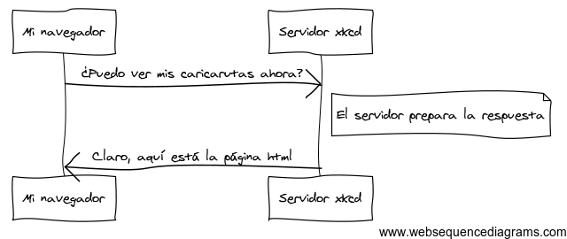
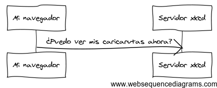

¡Enhorabuena! Al aprender acerca de Symfony2, vas bien en tu camino para llegar a ser un más productivo, bien enfocado y popular desarrollador web (en realidad, en la última parte, estás por tu cuenta). Symfony2 está diseñado para volver a lo básico: las herramientas de desarrollo que te permiten desarrollar más rápido y construir aplicaciones más robustas, mientras que permanece fuera de tu camino. Symfony está basado en las mejores ideas de muchas tecnologías: las herramientas y conceptos que estás a punto de aprender representan el esfuerzo de miles de personas, durante muchos años. En otras palabras, no estás aprendiendo “Symfony”, estás aprendiendo los fundamentos de la web, buenas prácticas de desarrollo, y cómo utilizar muchas nuevas y asombrosas bibliotecas PHP, dentro o independientemente de Symfony2. Por lo tanto, ¡prepárate!
Fiel a la filosofía Symfony2, este capítulo comienza explicando el concepto fundamental común para el desarrollo web: HTTP. Independientemente de tus antecedentes o lenguaje de programación preferido, este capítulo es una lectura obligada para todo mundo.
HTTP (“HyperText Transfer Protocol” para los apasionados y, en Español Protocolo de transferencia hipertexto) es un lenguaje de texto que permite a dos máquinas comunicarse entre sí. ¡Eso es todo! Por ejemplo, al comprobar las últimas noticias acerca de cómica xkcd, la siguiente conversación (aproximadamente) se lleva a cabo:
Y aunque el lenguaje real utilizado es un poco más formal, sigue siendo bastante simple. HTTP es el término utilizado para describir este lenguaje simple basado en texto. Y no importa cómo desarrolles en la web, el objetivo de tu servidor siempre es entender las peticiones de texto simple, y devolver respuestas en texto simple.
Symfony2 está construido basado en torno a esa realidad. Ya sea que te des cuenta o no, HTTP es algo que usas todos los días. Con Symfony2, aprenderás a dominarlo.
Todas las conversaciones en la web comienzan con una petición. La petición es un mensaje de texto creado por un cliente (por ejemplo un navegador, una aplicación para el iPhone, etc.) en un formato especial conocido como HTTP. El cliente envía la petición a un servidor, y luego espera la respuesta.
Echa un vistazo a la primera parte de la interacción (la petición) entre un navegador y el servidor web xkcd:
Hablando en HTTP, esta petición HTTP en realidad se vería algo parecida a esto:
GET / HTTP/1.1
Host: xkcd.com
Accept: text/html
User-Agent: Mozilla/5.0 (Macintosh)
Este sencillo mensaje comunica todo lo necesario sobre qué recursos exactamente solicita el cliente. La primera línea de una petición HTTP es la más importante y contiene dos cosas: la URI y el método HTTP.
La URI (por ejemplo, /, /contact, etc.) es la dirección o ubicación que identifica unívocamente al recurso que el cliente quiere. El método HTTP (por ejemplo, GET) define lo que quieres hacer con el recurso. Los métodos HTTP son los verbos de la petición y definen las pocas formas más comunes en que puedes actuar sobre el recurso:
| GET | Recupera el recurso desde el servidor |
| POST | Crea un recurso en el servidor |
| PUT | Actualiza el recurso en el servidor |
| DELETE | Elimina el recurso del servidor |
Con esto en mente, te puedes imaginar que una petición HTTP podría ser similar a eliminar una entrada de blog específica, por ejemplo:
DELETE /blog/15 HTTP/1.1
Nota
En realidad, hay nueve métodos HTTP definidos por la especificación HTTP, pero muchos de ellos no se utilizan o apoyan ampliamente. En realidad, muchos navegadores modernos no apoyan los métodos PUT y DELETE.
Además de la primera línea, una petición HTTP invariablemente contiene otras líneas de información conocidas como cabeceras de petición. Las cabeceras pueden suministrar una amplia gama de información como el servidor (o host) solicitado, los formatos de respuesta que acepta el cliente (Accept) y la aplicación que utiliza el cliente para realizar la petición (User-Agent). Existen muchas otras cabeceras y se pueden encontrar en el artículo Lista de campos de las cabeceras HTTP en la Wikipedia.
Una vez que un servidor ha recibido la petición, sabe exactamente qué recursos necesita el cliente (a través de la URI) y lo que el cliente quiere hacer con ese recurso (a través del método). Por ejemplo, en el caso de una petición GET, el servidor prepara el recurso y lo devuelve en una respuesta HTTP. Considera la respuesta del servidor web, xkcd:
Traducida a HTTP, la respuesta enviada de vuelta al navegador se verá algo similar a esto:
HTTP/1.1 200 OK
Date: Sat, 02 Apr 2011 21:05:05 GMT
Server: lighttpd/1.4.19
Content-Type: text/html
<html>
<!-- HTML for the xkcd comic -->
</html>
La respuesta HTTP contiene el recurso solicitado (contenido HTML en este caso), así como otra información acerca de la respuesta. La primera línea es especialmente importante y contiene el código de estado HTTP (200 en este caso) de la respuesta. El código de estado comunica el resultado global de la petición devuelta al cliente. ¿Tuvo éxito la petición? ¿Hubo algún error? Existen diferentes códigos de estado que indican éxito, un error o qué más se necesita hacer con el cliente (por ejemplo, redirigirlo a otra página). La lista completa se puede encontrar en el artículo Lista de códigos de estado HTTP en la Wikipedia.
Al igual que la petición, una respuesta HTTP contiene datos adicionales conocidos como cabeceras HTTP. Por ejemplo, una importante cabecera de la respuesta HTTP es Content-Type. El cuerpo del mismo recurso se puede devolver en varios formatos diferentes, incluyendo HTML, XML o JSON y la cabecera Content-Type utiliza Internet Media Types como text/html para decirle al cliente cual formato se ha devuelto. Puedes encontrar una lista completa en el artículo Lista de medios de comunicación de Internet en la Wikipedia.
Existen muchas otras cabeceras, algunas de las cuales son muy poderosas. Por ejemplo, ciertas cabeceras se pueden usar para crear un poderoso sistema de memoria caché.
Esta conversación petición-respuesta es el proceso fundamental que impulsa toda la comunicación en la web. Y tan importante y poderoso como es este proceso, inevitablemente es simple.
El hecho más importante es el siguiente: independientemente del lenguaje que utilices, el tipo de aplicación que construyas (web, móvil, API JSON), o la filosofía de desarrollo que sigas, el objetivo final de una aplicación siempre es entender cada petición y crear y devolver la respuesta adecuada.
Symfony está diseñado para adaptarse a esta realidad.
Truco
Para más información acerca de la especificación HTTP, lee la referencia original HTTP 1.1 RFC o HTTP Bis, el cual es un esfuerzo activo para aclarar la especificación original. Una gran herramienta para comprobar tanto la petición como las cabeceras de la respuesta mientras navegas es la extensión Cabeceras HTTP en vivo (Live HTTP Headers) para Firefox.
Entonces ¿cómo interactúas con la “petición” y creas una “respuesta” utilizando PHP? En realidad, PHP te abstrae un poco de todo el proceso:
<?php
$uri = $_SERVER['REQUEST_URI'];
$foo = $_GET['foo'];
header('Content-type: text/html');
echo 'La URI solicitada es: '.$uri;
echo 'El valor del parámetro "foo" es: '.$foo;
Por extraño que parezca, esta pequeña aplicación, de hecho, está tomando información de la petición HTTP y la utiliza para crear una respuesta HTTP. En lugar de analizar el mensaje HTTP de la petición, PHP prepara variables superglobales tales como $_SERVER y $_GET que contienen toda la información de la petición. Del mismo modo, en lugar de devolver la respuesta HTTP con formato de texto, puedes usar la función header() para crear las cabeceras de la respuesta y simplemente imprimir el contenido real que será la porción que contiene el mensaje de la respuesta. PHP creará una verdadera respuesta HTTP y la devolverá al cliente:
HTTP/1.1 200 OK
Date: Sat, 03 Apr 2011 02:14:33 GMT
Server: Apache/2.2.17 (Unix)
Content-Type: text/html
La URI solicitada es: /testing?foo=symfony
El valor del parámetro "foo" es: symfony
Symfony ofrece una alternativa al enfoque de PHP a través de dos clases que te permiten interactuar con la petición HTTP y la respuesta de una manera más fácil. La clase Symfony\Component\HttpFoundation\Request es una sencilla representación orientada a objetos del mensaje de la petición HTTP. Con ella, tienes toda la información a tu alcance:
use Symfony\Component\HttpFoundation\Request;
$request = Request::createFromGlobals();
// la URI solicitada (p.e. /sobre) menos algunos parámetros de la consulta
$request->getPathInfo();
// recupera las variables GET y POST respectivamente
$request->query->get('foo');
$request->request->get('bar', 'default value if bar does not exist');
// recupera las variables de SERVER
$request->server->get('HTTP_HOST');
// recupera una instancia del archivo subido identificado por foo
$request->files->get('foo');
// recupera un valor de COOKIE
$request->cookies->get('PHPSESSID');
// recupera una cabecera HTTP de la petición, normalizada, con índices en minúscula
$request->headers->get('host');
$request->headers->get('content_type');
$request->getMethod(); // GET, POST, PUT, DELETE, HEAD
$request->getLanguages(); // un arreglo de idiomas aceptados por el cliente
Como bono adicional, en el fondo la clase Petición hace un montón de trabajo del cual nunca tendrás que preocuparte. Por ejemplo, el método isSecure() comprueba tres diferentes valores en PHP que pueden indicar si el usuario está conectado a través de una conexión segura (es decir, https).
Symfony también proporciona una clase Respuesta: una simple representación PHP de un mensaje de respuesta HTTP. Esto permite que tu aplicación utilice una interfaz orientada a objetos para construir la respuesta que será devuelta al cliente:
use Symfony\Component\HttpFoundation\Response;
$response = new Response();
$response->setContent('<html><body><h1>Hello world!</h1></body></html>');
$response->setStatusCode(200);
$response->headers->set('Content-Type', 'text/html');
// imprime las cabeceras HTTP seguidas por el contenido
$response->send();
Si Symfony no ofreciera nada más, ya tendrías un conjunto de herramientas para acceder fácilmente a la información de la petición y una interfaz orientada a objetos para crear la respuesta. Incluso, a medida que aprendas muchas de las poderosas características de Symfony, nunca olvides que el objetivo de tu aplicación es interpretar una petición y crear la respuesta adecuada basada en la lógica de tu aplicación.
Truco
Las clases Respuesta y Petición forman parte de un componente independiente incluido en Symfony llamado HttpFoundation. Este componente se puede utilizar completamente independiente de Symfony y también proporciona clases para manejar sesiones y subir archivos.
Al igual que el mismo HTTP, los objetos Petición y Respuesta son bastante simples. La parte difícil de la construcción de una aplicación es escribir lo que viene en el medio. En otras palabras, el verdadero trabajo viene al escribir el código que interpreta la información de la petición y crea la respuesta.
Tu aplicación probablemente hace muchas cosas, como enviar correo electrónico, manejar los formularios presentados, guardar cosas en una base de datos, reproducir las páginas HTML y proteger el contenido con seguridad. ¿Cómo puedes manejar todo esto y todavía mantener tu código organizado y fácil de mantener?
Symfony fue creado para resolver estos problemas para que no tengas que hacerlo personalmente.
Tradicionalmente, las aplicaciones eran construidas de modo que cada “página” de un sitio tenía su propio archivo físico:
index.php
contacto.php
blog.php
Hay varios problemas con este enfoque, incluyendo la falta de flexibilidad de las URL (¿qué pasa si quieres cambiar blog.php a noticias.php sin romper todos tus enlaces?) y el hecho de que cada archivo debe incluir manualmente un conjunto de archivos básicos para la seguridad, conexiones a base de datos y que el “aspecto” del sitio pueda permanecer constante.
Una mucho mejor solución es usar un controlador frontal: un solo archivo PHP que se encargue de todas las peticiones que llegan a tu aplicación. Por ejemplo:
| /index.php | ejecuta index.php |
| /index.php/contact | ejecuta index.php |
| /index.php/blog | ejecuta index.php |
Truco
Usando mod_rewrite de Apache (o equivalente con otros servidores web), las URL se pueden limpiar fácilmente hasta ser sólo /, /contact y /blog.
Ahora, cada petición se maneja exactamente igual. En lugar de URL individuales ejecutando diferentes archivos PHP, el controlador frontal siempre se ejecuta, y el enrutado de diferentes URL a diferentes partes de tu aplicación se realiza internamente. Esto resuelve los problemas del enfoque original. Casi todas las aplicaciones web modernas lo hacen —incluyendo aplicaciones como WordPress.
Pero dentro de tu controlador frontal, ¿cómo sabes qué página debes reproducir y cómo puedes reproducir cada una en forma sana? De una forma u otra, tendrás que comprobar la URI entrante y ejecutar diferentes partes de tu código en función de ese valor. Esto se puede poner feo rápidamente:
// index.php
$request = Request::createFromGlobals();
$path = $request->getPathInfo(); // La ruta URI solicitada
if (in_array($path, array('', '/')) {
$response = new Response('Welcome to the homepage.');
} elseif ($path == '/contact') {
$response = new Response('Contact us');
} else {
$response = new Response('Page not found.', 404);
}
$response->send();
La solución a este problema puede ser difícil. Afortunadamente esto es exactamente para lo que Symfony está diseñado.
Cuando dejas que Symfony controle cada petición, la vida es mucho más fácil. Symfony sigue el mismo patrón simple en cada petición:

Las peticiones entrantes son interpretadas por el enrutador y pasadas a las funciones controladoras que regresan objetos Respuesta.
Cada “página” de tu sitio está definida en un archivo de configuración de enrutado que asigna las diferentes URL a diferentes funciones PHP. El trabajo de cada función PHP conocida como controlador, es utilizar la información de la petición —junto con muchas otras herramientas que Symfony pone a tu disposición— para crear y devolver un objeto Respuesta. En otras palabras, el controlador es donde está tu código: ahí es dónde se interpreta la petición y crea una respuesta.
¡Así de fácil! Repasemos:
Sin bucear demasiado en los detalles, veamos este proceso en acción. Supongamos que deseas agregar una página /contact a tu aplicación Symfony. En primer lugar, empezamos agregando una entrada /contact a tu archivo de configuración de enrutado:
contact:
pattern: /contact
defaults: { _controller: AcmeDemoBundle:Main:contact }
Nota
En este ejemplo utilizamos YAML para definir la configuración de enrutado. La configuración de enrutado también se puede escribir en otros formatos, tal como XML o PHP.
Cuando alguien visita la página /contact, esta ruta coincide, y se ejecuta el controlador especificado. Como veremos en el capítulo Enrutando, La cadena AcmeDemoBundle:Main:contact es una sintaxis corta que apunta hacia el método PHP contactAction dentro de una clase llamada MainController:
class MainController
{
public function contactAction()
{
return new Response('<h1>Contact us!</h1>');
}
}
En este ejemplo muy simple, el controlador simplemente crea un objeto Respuesta con el código HTML "<h1>Contact us!</h1>". En el capítulo Controlador, aprenderás cómo un controlador puede reproducir plantillas, permitiendo que tu código de “presentación” (es decir, algo que en realidad escribe HTML) viva en un archivo de plantilla separado. Esto libera al controlador de preocuparse sólo de las cosas difíciles: la interacción con la base de datos, la manipulación de los datos presentados o el envío de mensajes de correo electrónico.
Ahora sabemos que el objetivo de cualquier aplicación es interpretar cada petición entrante y crear una respuesta adecuada. Cuando una aplicación crece, es más difícil mantener organizado tu código y que a la vez sea fácil darle mantenimiento. Invariablemente, las mismas tareas complejas siguen viniendo una y otra vez: la persistencia de cosas a la base de datos, procesamiento y reutilización de plantillas, manejo de formularios presentados, envío de mensajes de correo electrónico, validación de entradas del usuario y administración de la seguridad.
La buena nueva es que ninguno de estos problemas es único. Symfony proporciona una plataforma completa, con herramientas que te permiten construir tu aplicación, no tus herramientas. Con Symfony2, nada se te impone: eres libre de usar la plataforma Symfony completa, o simplemente una pieza de Symfony por sí misma.
Entonces, ¿qué es Symfony2? En primer lugar, Symfony2 es una colección de más de veinte bibliotecas independientes que se pueden utilizar dentro de cualquier proyecto PHP. Estas bibliotecas, llamadas componentes de Symfony2, contienen algo útil para casi cualquier situación, independientemente de cómo desarrolles tu proyecto. Para nombrar algunas:
Todos y cada uno de estos componentes se desacoplan y se pueden utilizar en cualquier proyecto PHP, independientemente de si utilizas la plataforma Symfony2. Cada parte está hecha para utilizarla si es conveniente y sustituirse cuando sea necesario.
Entonces, ¿qué es la plataforma Symfony2? La plataforma Symfony2 es una biblioteca PHP que realiza dos distintas tareas:
El objetivo de la plataforma es integrar muchas herramientas independientes con el fin de proporcionar una experiencia coherente al desarrollador. Incluso la propia plataforma es un paquete Symfony2 (es decir, un complemento) que se puede configurar o sustituir completamente.
Symfony2 proporciona un potente conjunto de herramientas para desarrollar aplicaciones web rápidamente sin imponerse en tu aplicación. Los usuarios normales rápidamente pueden comenzar el desarrollo usando una distribución Symfony2, que proporciona un esqueleto del proyecto con parámetros predeterminados. Para los usuarios más avanzados, el cielo es el límite.